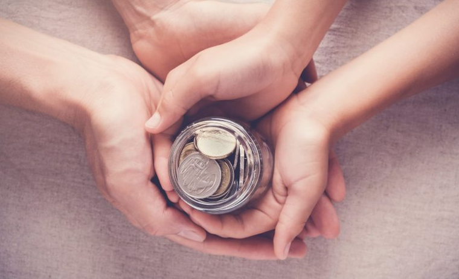

O ato de doar contribui efetivamente para melhorar a sociedade, as instituições e, principalmente as pessoas. Ao enxergar as necessidades do próximo e fazer algo para supri-las, nos tornamos mais justos e igualitários.
As organizações não governamentais (ONGs) são instituições que não pertencem à iniciativa privada, portanto, não têm fins lucrativos. Elas também não pertencem a um governo. Desse modo, elas pertencem ao chamado terceiro setor.
Fazer uma doação mensal em dinheiro é uma forma de dar mais autonomia às ONGs, visto que as deixa livres para aplicar o recurso nos pontos necessários para a continuidade dos seus projetos. Doações em bens são extremamente úteis, mas não permitem que essas instituições usem as contribuições para pagamento das suas contas, tais como despesas com água, luz, telefone, salários etc.
Infelizmente, o Brasil não tem uma cultura forte de doação. De acordo com o World Giving Index 2018, mais conhecido como “ranking global da solidariedade”, dos 146 países avaliados, o nosso ocupa a 122ª posição. Esse é o relatório mais recente. Aqui, vale destacar que em 2017, o Brasil ocupava a 75ª posição entre os países que mais ajudam.
Um dos propósitos do Instituto Reação é justamente mudar esse cenário, com ações que mostrem às pessoas e empresas a importância das doações para a continuidade das ONGs.
Existem muitas causas que você pode abraçar, escolha a sua: animais abandonados, LGBT, moradores de rua, crianças, pessoas com deficiência e saúde
AMPARA Animal - Adote um Gatinho - Aliança com a Vida - Abrigo do Dudu
Casa 1 - Associação da Parada do Orgulho GLBT de São Paulo (APOGLBT) - Micro Rainbow International Foundation - Transempregos
Anjos da Noite - Amor + Ação = Doação - Entrega por SP
Make a Wish - GRAACC - Visão Mundial
Mapa do Acolhimento - Tamo Juntas - Bem Querer Mulher
APOIO - IBDD - Instituto Novo Ser
TUCCA - Amigos do bem - Horas da Vida